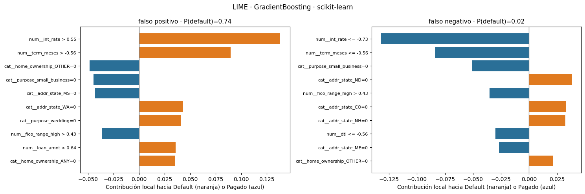
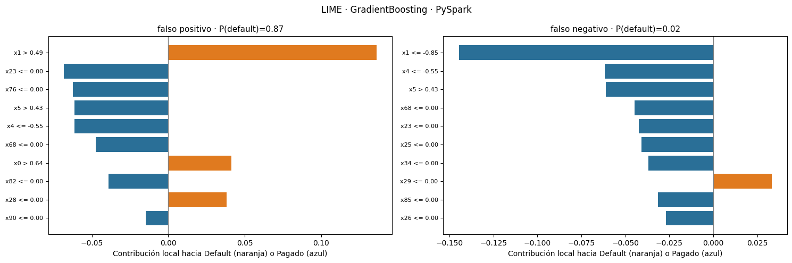

Paso 7 · Interpretabilidad local con LIME#
Qué hace este notebook
Toma el modelo de mayor AUC probabilístico en cada entorno (en ambos casos GradientBoosting: sklearn 0.7179, PySpark 0.7174).
Selecciona dos instancias mal clasificadas por entorno: el falso positivo y el falso negativo con mayor «seguridad equivocada».
Explica cada una con LIME y discute las limitaciones, especialmente en el entorno distribuido.
Qué es LIME: para una instancia, genera miles de perturbaciones cercanas, las pasa por el modelo y ajusta un modelo lineal simple ponderado por cercanía. Los coeficientes de ese modelo local indican qué variables empujaron la predicción hacia default o pagado para esa instancia (no para todo el modelo).
Parte A: scikit-learn. Parte B: PySpark (requiere Java y pyspark; se instalan aquí).
!pip -q install lime
import os, glob, time, warnings
import numpy as np, pandas as pd, joblib
import matplotlib.pyplot as plt
from lime.lime_tabular import LimeTabularExplainer
try:
from google.colab import drive
drive.mount('/content/drive')
except ImportError:
pass
RUTA = '/content/drive/MyDrive/ML_LendingClub' # <- ajusta si tu carpeta se llama distinto
DIR_OUT = RUTA + '/resultados_lime'; os.makedirs(DIR_OUT, exist_ok=True)
SEMILLA = 42
N_FONDO = 20000 # filas de entrenamiento que usa LIME para conocer la distribución de cada variable
N_PERTURB = 5000 # perturbaciones por explicación
N_VARS = 10 # variables mostradas por explicación
Drive already mounted at /content/drive; to attempt to forcibly remount, call drive.mount("/content/drive", force_remount=True).
Selección de las instancias mal clasificadas#
Umbral 0.5 sobre la probabilidad de default. Se elige, en cada entorno:
el falso positivo más seguro (predijo la mayor probabilidad de default, pero el préstamo se pagó),
el falso negativo más seguro (la menor probabilidad de default, pero el préstamo incumplió).
def elegir(scores_path):
s = pd.read_parquet(scores_path)[['id', 'default', 'GradientBoosting']]
s['id'] = s['id'].astype(str)
fp = s[(s['default'] == 0) & (s['GradientBoosting'] >= 0.5)].sort_values('GradientBoosting', ascending=False).iloc[0]
fn = s[(s['default'] == 1) & (s['GradientBoosting'] < 0.5)].sort_values('GradientBoosting').iloc[0]
return {'falso_positivo': (fp['id'], float(fp['GradientBoosting'])), 'falso_negativo': (fn['id'], float(fn['GradientBoosting']))}
INST_SK = elegir(RUTA + '/scores_sklearn.parquet')
INST_SP = elegir(RUTA + '/scores_pyspark.parquet')
print('sklearn:', INST_SK); print('pyspark:', INST_SP)
sklearn: {'falso_positivo': ('55961482', 0.7396300688734534), 'falso_negativo': ('36099806', 0.016184874981559374)}
pyspark: {'falso_positivo': ('55961482', 0.870698852883864), 'falso_negativo': ('36099806', 0.023101965436578942)}
Parte A · scikit-learn#
Se recargan los datos con el mismo filtro y la misma partición y se aplica el preprocesador ya ajustado (guardado en el notebook 3). Las columnas one-hot se declaran como categóricas para que LIME las perturbe como 0/1 y no como números continuos.
NUM = ['loan_amnt', 'int_rate', 'installment', 'annual_inc', 'dti', 'fico_range_high', 'delinq_2yrs',
'inq_last_6mths', 'open_acc', 'pub_rec', 'revol_bal', 'revol_util', 'total_acc', 'mort_acc', 'pub_rec_bankruptcies']
CAT = ['purpose', 'home_ownership', 'addr_state', 'verification_status']
USECOLS = ['id', 'loan_status', 'term', 'emp_length'] + NUM + CAT
candidatos = [f for f in glob.glob(RUTA + '/**/accepted_2007_to_2018Q4.csv', recursive=True) if os.path.isfile(f)]
archivo = candidatos[0] if candidatos else sorted(f for f in glob.glob(RUTA + '/*accepted*') if os.path.isfile(f))[0]
df = pd.read_csv(archivo, usecols=USECOLS, low_memory=False)
df = df[df['loan_status'].isin(['Fully Paid', 'Charged Off'])].reset_index(drop=True)
df['id'] = df['id'].astype(str)
part = pd.read_parquet(RUTA + '/split_80_20_seed42.parquet'); part['id'] = part['id'].astype(str)
df['split'] = df['id'].map(part.set_index('id')['split'])
df['term_meses'] = df['term'].str.extract(r'(\d+)')[0].astype(float)
df['emp_length_anios'] = df['emp_length'].str.extract(r'(\d+)')[0].astype(float)
df.loc[df['emp_length'] == '< 1 year', 'emp_length_anios'] = 0.0
for c in CAT: df[c] = df[c].fillna('Desconocido')
PRE = joblib.load(RUTA + '/resultados_sklearn/preprocesador.joblib')
pre, FEATURES, NOMBRES = PRE['pre'], PRE['features'], PRE['nombres']
modelo_sk = joblib.load(RUTA + '/resultados_sklearn/GradientBoosting.joblib')
fondo = df[df['split'] == 'train'].sample(N_FONDO, random_state=SEMILLA)
X_fondo = pre.transform(fondo[FEATURES]).astype(np.float32)
print('Fondo:', X_fondo.shape, '| modelo:', type(modelo_sk).__name__)
Fondo: (20000, 91) | modelo: HistGradientBoostingClassifier
df['default'] = (df['loan_status'] == 'Charged Off').astype(int)
cat_idx = [i for i, n in enumerate(NOMBRES) if n.startswith('cat__')]
exp_sk = LimeTabularExplainer(X_fondo, feature_names=NOMBRES, class_names=['Pagado', 'Default'],
categorical_features=cat_idx, mode='classification',
discretize_continuous=True, random_state=SEMILLA)
def fila_sk(id_):
return pre.transform(df[df['id'] == id_][FEATURES]).astype(np.float32)[0]
def explicar(explainer, x, predict_fn, semilla):
return explainer.explain_instance(x, predict_fn, num_features=N_VARS, num_samples=N_PERTURB, labels=(1,))
resultados_sk = {}
for tipo, (id_, p) in INST_SK.items():
x = fila_sk(id_)
t0 = time.time()
e = explicar(exp_sk, x, modelo_sk.predict_proba, SEMILLA)
seg = time.time() - t0
resultados_sk[tipo] = (e, p, seg)
real = df.loc[df['id'] == id_, 'default'].iloc[0]
print(f'{tipo}: id={id_} | prob. default modelo={p:.3f} | real={"Default" if real else "Pagado"} | '
f'explicación {seg:.1f} s | R² local={e.score:.3f}')
falso_positivo: id=55961482 | prob. default modelo=0.740 | real=Pagado | explicación 0.1 s | R² local=0.530
falso_negativo: id=36099806 | prob. default modelo=0.016 | real=Default | explicación 0.1 s | R² local=0.481
def graficar(resultados, titulo, archivo):
fig, axs = plt.subplots(1, len(resultados), figsize=(7.5 * len(resultados), 5))
axs = np.atleast_1d(axs)
for a, (tipo, (e, p, seg)) in zip(axs, resultados.items()):
lista = e.as_list(label=1)[::-1]
a.barh([n for n, _ in lista], [w for _, w in lista], color=['#e07a1f' if w > 0 else '#2a6f97' for _, w in lista])
a.axvline(0, color='gray', lw=1)
a.set_title(f'{tipo.replace("_", " ")} · P(default)={p:.2f}', fontsize=11)
a.set_xlabel('Contribución local hacia Default (naranja) o Pagado (azul)')
a.tick_params(axis='y', labelsize=8)
plt.suptitle(titulo); plt.tight_layout(); plt.savefig(DIR_OUT + '/' + archivo, dpi=150); plt.show()
graficar(resultados_sk, 'LIME · GradientBoosting · scikit-learn', 'lime_sklearn.png')
for tipo, (e, p, seg) in resultados_sk.items():
print('\n', tipo); [print(f' {n:55s} {w:+.4f}') for n, w in e.as_list(label=1)]

falso_positivo
num__int_rate > 0.55 +0.1380
num__term_meses > -0.56 +0.0895
cat__home_ownership_OTHER=0 -0.0483
cat__purpose_small_business=0 -0.0444
cat__addr_state_MS=0 -0.0430
cat__addr_state_WA=0 +0.0429
cat__purpose_wedding=0 +0.0413
num__fico_range_high > 0.43 -0.0361
num__loan_amnt > 0.64 +0.0358
cat__home_ownership_ANY=0 +0.0352
falso_negativo
num__int_rate <= -0.73 -0.1319
num__term_meses <= -0.56 -0.0842
cat__purpose_small_business=0 -0.0507
cat__addr_state_ND=0 +0.0383
num__fico_range_high > 0.43 -0.0353
cat__addr_state_CO=0 +0.0327
cat__addr_state_NH=0 +0.0325
num__dti <= -0.56 -0.0301
cat__addr_state_ME=0 -0.0268
cat__home_ownership_OTHER=0 +0.0211
Estabilidad de la explicación#
LIME es estocástico (muestrea perturbaciones). Repetimos la explicación con tres semillas distintas y medimos cuántas de las 5 variables principales se repiten.
def estabilidad(predict_fn, x, explicador_fn, semillas=(1, 2, 3)):
tops = []
for s in semillas:
e = explicador_fn(s).explain_instance(x, predict_fn, num_features=N_VARS, num_samples=N_PERTURB, labels=(1,))
tops.append([n for n, _ in e.as_list(label=1)[:5]])
comunes = set(tops[0]).intersection(*tops[1:])
return len(comunes), tops
for tipo, (id_, p) in INST_SK.items():
x = fila_sk(id_)
k, tops = estabilidad(modelo_sk.predict_proba, x,
lambda s: LimeTabularExplainer(X_fondo, feature_names=NOMBRES, class_names=['Pagado', 'Default'],
categorical_features=cat_idx, mode='classification', discretize_continuous=True, random_state=s))
print(f'{tipo}: {k}/5 variables principales comunes en las 3 semillas')
falso_positivo: 3/5 variables principales comunes en las 3 semillas
falso_negativo: 3/5 variables principales comunes en las 3 semillas
Parte B · PySpark#
LIME no es distribuido: corre en el driver y pide predicciones al modelo. Aquí hay dos costos propios del entorno distribuido que se medirán:
Cada llamada a
predict_fnlanza un trabajo de Spark (crear un DataFrame con las 5 000 perturbaciones, transformarlo y recolectar las probabilidades).Los datos de fondo y las instancias a explicar deben traerse al driver. Esto se hace solo con una muestra pequeña (20 000 filas de entrenamiento y 2 filas de prueba), nunca con el dataset completo.
!apt-get -qq install -y openjdk-17-jdk-headless > /dev/null 2>&1
!pip -q install pyspark
import shutil
p_java = '/usr/lib/jvm/java-17-openjdk-amd64'
if os.path.exists(p_java): os.environ['JAVA_HOME'] = p_java
from pyspark.sql import SparkSession, functions as F
from pyspark.ml import PipelineModel
from pyspark.ml.classification import GBTClassificationModel
from pyspark.ml.linalg import Vectors
spark = (SparkSession.builder.appName('LIME_Spark').master('local[*]')
.config('spark.sql.shuffle.partitions', '400').config('spark.default.parallelism', '400')
.config('spark.executor.memory', '8g').config('spark.driver.memory', '16g')
.config('spark.memory.fraction', 0.8).config('spark.memory.storageFraction', 0.3)
.config('spark.sql.ansi.enabled', 'false').getOrCreate())
DIR_SP = RUTA + '/resultados_pyspark'
pipe = PipelineModel.load(DIR_SP + '/preprocesador')
modelo_sp = GBTClassificationModel.load(DIR_SP + '/modelo_GradientBoosting')
CSV_LOCAL = '/content/accepted_2007_to_2018Q4.csv'
if not os.path.exists(CSV_LOCAL): shutil.copyfile(archivo, CSV_LOCAL)
raw = (spark.read.option('header', True).option('quote', '"').option('escape', '"').csv(CSV_LOCAL))
sel = raw.select('id', 'loan_status', 'term', 'emp_length', *[F.col(c).cast('double').alias(c) for c in NUM], *CAT)
cerr = sel.filter(F.col('loan_status').isin('Fully Paid', 'Charged Off'))
split_df = spark.read.parquet(RUTA + '/split_80_20_seed42.parquet')
base = cerr.join(F.broadcast(split_df), on='id', how='left')
datos = (base.withColumn('term_meses', F.regexp_extract('term', r'(\d+)', 1).cast('double'))
.withColumn('emp_length_anios', F.when(F.col('emp_length') == '< 1 year', F.lit(0.0))
.otherwise(F.regexp_extract('emp_length', r'(\d+)', 1).cast('double'))))
for c in CAT: datos = datos.withColumn(c, F.coalesce(F.col(c), F.lit('Desconocido')))
ids_sp = [v[0] for v in INST_SP.values()]
fondo_sp = (datos.filter(F.col('split') == 'train').sample(False, 0.03, SEMILLA).limit(N_FONDO))
inst_sp = datos.filter(F.col('id').isin(ids_sp))
t0 = time.time()
Xf = np.array([r['features'].toArray() for r in pipe.transform(fondo_sp).select('features').collect()])
filas = {r['id']: r['features'].toArray() for r in pipe.transform(inst_sp).select('id', 'features').collect()}
print(f'Fondo y {len(filas)} instancias traídos al driver en {time.time()-t0:.1f} s | fondo: {Xf.shape}')
# nombres de las 91 columnas: numéricas + categorías en el orden de cada StringIndexer (+1 casilla "inválido" por handleInvalid='keep')
NUM_COLS = NUM + ['term_meses', 'emp_length_anios']
nombres_sp = list(NUM_COLS)
for m in pipe.stages:
if m.__class__.__name__ == 'StringIndexerModel':
base_c = m.getInputCol()
nombres_sp += [f'cat__{base_c}_{lab}' for lab in m.labelsArray[0]] + [f'cat__{base_c}___invalido']
if len(nombres_sp) != Xf.shape[1]:
print(f'Aviso: {len(nombres_sp)} nombres vs {Xf.shape[1]} columnas; se usan nombres genéricos')
nombres_sp = [f'x{i}' for i in range(Xf.shape[1])]
cat_idx_sp = [i for i, n in enumerate(nombres_sp) if n.startswith('cat__')]
Fondo y 2 instancias traídos al driver en 14.8 s | fondo: (20000, 99)
Aviso: 95 nombres vs 99 columnas; se usan nombres genéricos
def predict_spark(X):
df_p = spark.createDataFrame([(Vectors.dense(r),) for r in np.asarray(X, dtype=float)], ['features'])
pr = modelo_sp.transform(df_p).select('probability').collect()
return np.array([r['probability'].toArray() for r in pr])
# comprobación: la probabilidad de LIME debe coincidir con la guardada en scores_pyspark
sc_sp = pd.read_parquet(RUTA + '/scores_pyspark.parquet'); sc_sp['id'] = sc_sp['id'].astype(str)
for tipo, (id_, p) in INST_SP.items():
p_chk = predict_spark(filas[id_][None, :])[0, 1]
print(f'{tipo}: P(default) guardada={p:.4f} | recalculada={p_chk:.4f}')
exp_sp = LimeTabularExplainer(Xf, feature_names=nombres_sp, class_names=['Pagado', 'Default'],
categorical_features=cat_idx_sp, mode='classification',
discretize_continuous=True, random_state=SEMILLA)
resultados_sp = {}
for tipo, (id_, p) in INST_SP.items():
t0 = time.time()
e = exp_sp.explain_instance(filas[id_], predict_spark, num_features=N_VARS, num_samples=N_PERTURB, labels=(1,))
seg = time.time() - t0
resultados_sp[tipo] = (e, p, seg)
print(f'{tipo}: id={id_} | explicación {seg:.1f} s | R² local={e.score:.3f}')
graficar(resultados_sp, 'LIME · GradientBoosting · PySpark', 'lime_pyspark.png')
for tipo, (e, p, seg) in resultados_sp.items():
print('\n', tipo); [print(f' {n:55s} {w:+.4f}') for n, w in e.as_list(label=1)]
falso_positivo: P(default) guardada=0.8707 | recalculada=0.8707
falso_negativo: P(default) guardada=0.0231 | recalculada=0.0231
falso_positivo: id=55961482 | explicación 4.0 s | R² local=0.391
falso_negativo: id=36099806 | explicación 4.2 s | R² local=0.472

falso_positivo
x1 > 0.49 +0.1363
x23 <= 0.00 -0.0683
x76 <= 0.00 -0.0625
x5 > 0.43 -0.0614
x4 <= -0.55 -0.0613
x68 <= 0.00 -0.0473
x0 > 0.64 +0.0413
x82 <= 0.00 -0.0392
x28 <= 0.00 +0.0382
x90 <= 0.00 -0.0146
falso_negativo
x1 <= -0.85 -0.1446
x4 <= -0.55 -0.0616
x5 > 0.43 -0.0612
x68 <= 0.00 -0.0448
x23 <= 0.00 -0.0424
x25 <= 0.00 -0.0408
x34 <= 0.00 -0.0369
x29 <= 0.00 +0.0331
x85 <= 0.00 -0.0316
x26 <= 0.00 -0.0271
Comparación de costos y resumen#
res = pd.DataFrame([
dict(entorno='scikit-learn', instancia=t, P_default=p, segundos=s, R2_local=e.score) for t, (e, p, s) in resultados_sk.items()
] + [
dict(entorno='PySpark', instancia=t, P_default=p, segundos=s, R2_local=e.score) for t, (e, p, s) in resultados_sp.items()
])
res.to_csv(DIR_OUT + '/lime_resumen.csv', index=False)
res.round(3)
| entorno | instancia | P_default | segundos | R2_local | |
|---|---|---|---|---|---|
| 0 | scikit-learn | falso_positivo | 0.740 | 0.079 | 0.530 |
| 1 | scikit-learn | falso_negativo | 0.016 | 0.069 | 0.481 |
| 2 | PySpark | falso_positivo | 0.871 | 3.959 | 0.391 |
| 3 | PySpark | falso_negativo | 0.023 | 4.169 | 0.472 |
Limitaciones y lectura (para el informe)#
Es local, no global. Cada explicación vale solo para esa instancia y su vecindario; no describe el modelo completo.
Es estocástica. Depende de las perturbaciones. La prueba de estabilidad muestra cuántas variables principales sobreviven al cambiar la semilla; si son pocas, la explicación debe leerse con cautela.
Las variables están estandarizadas. Las reglas de LIME (por ejemplo
int_rate > 0.62) están en unidades de desviación estándar del entrenamiento, no en las unidades originales.Variables correlacionadas y one-hot. Las perturbaciones crean combinaciones poco realistas (por ejemplo, una casa «RENT» y «OWN» a la vez si las columnas no se tratan como categóricas), y la tasa de interés está muy correlacionada con otras variables de riesgo, de modo que el efecto se reparte de forma arbitraria.
Fidelidad local (R²). Un R² bajo indica que un modelo lineal local no reproduce bien al modelo en esa zona.
En un entorno distribuido LIME no escala por sí solo. Corre en el driver; el modelo distribuido solo aporta el cálculo de probabilidades. Cada explicación implica miles de perturbaciones que viajan al clúster (latencia por trabajo), y el fondo de datos debe traerse al driver (aquí solo una muestra de 20 000 filas). Para explicar muchas instancias habría que paralelizar las perturbaciones (por ejemplo con
mapInPandas) o usar métodos como SHAP aproximado.Qué aporta LIME al análisis. Los AUC dicen cuánto acierta cada modelo; LIME muestra por qué se equivoca en casos concretos y permite comprobar si sklearn y Spark (con AUC casi idéntico) razonan de forma parecida.